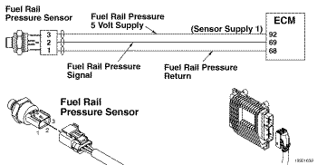
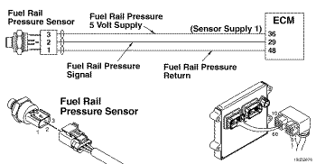
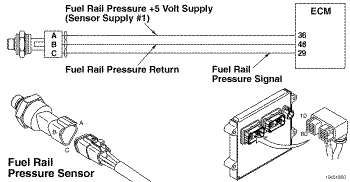

Cdigo de Falha 554
|
| CDIGO | RAZO | EFEITO |
| Cdigo de Falha: PID:554 SPN:157 FMI:2 LMPADA:mbar SRT: |
Presso 1 da Galeria de Medio de Dbito do Injetor - Dados Invlidos, Intermitentes ou Incorretos. O ECM detectou que o sinal de presso do combustvel no est mudando. |
O ECM estimar a presso do combustvel e a potncia ser reduzida. |
|
 ISF2.8 CM2220 E/ISF2.8 CM2220 AN/ISF3.8 CM2220 AN - Circuito do Sensor de Presso 1 na Galeria de Medio de Dbito dos Injetores
|
|
 ISB4.5, ISB6.7, ISD4.5 e ISD6.7 CM2150 SN/ISL8.9 CM2150 SN - Circuito do Sensor de Presso 1 na Galeria de Medio de Dbito dos Injetores
|
|
 ISZ13 CM2150 - Circuito do Sensor de Presso 1 na Galeria de Medio de Dbito dos Injetores
|
O sensor de presso do combustvel contm pinos de alimentao, de sinal e de retorno. O mdulo eletrnico de controle (ECM) fornece 5 volts ao sensor de presso do combustvel. Esta fonte de alimentao de 5 volts uma fonte compartilhada. Os outros sensores neste circuito so o sensor de presso/temperatura no coletor de admisso, o sensor da presso baromtrica e o sensor de reserva de posio do motor.
O sensor de presso de combustvel est localizado na common rail no lado da entrada de ar do motor.
O diagnstico executado continuamente enquanto o motor funciona.
O ECM detecta que a leitura da presso na common rail no est mudando conforme as condies de operao do motor.
O ECM acende a luz mbar de verificao do motor (CHECK ENGINE) imediatamente quando o diagnstico executado e falha. Pode ocorrer despotenciamento em alguns motores. assumido um valor padro para a leitura da presso na common rail.
Este cdigo de falha pode tornar-se ativo sempre que o motor opera sob carga e o ECM detecta que a presso do combustvel na galeria no muda. Este cdigo de falha se tornar inativo quando o ECM for desligado ou se o ECM detectar que o motor opera sob condio de carga e que a presso do combustvel muda normalmente. Se houver muitas contagens inativas deste cdigo de falha ou se a falha no se repetir, procure por sinais de violao do circuito do sensor de presso do combustvel.
Se o cdigo de falha ocorre intermitentemente (no pode ser reproduzido durante um teste de rodagem), inspecione cada um dos itens abaixo quanto a danos ou conexes incorretas: